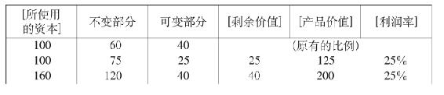

[资本的二重倾向：扩大所使用的活劳动和缩小必要劳动]56
〔注意。我们在前面已经看到，总资本的同一百分比可以表现资本创造它的剩余价值即创造相对的或绝对的剩余劳动的各种极不相同的比例。如果资本的不变价值部分对可变价值部分（与劳动相交换的部分）的比例是：后者＝总资本的1/2（即资本100＝50（不变资本）＋50（可变资本）），那么，同劳动相交换的部分只要增加50%就能给资本提供25%利润；这就是说，50＋50（＋25）＝125；而在上例中是75＋25（＋25）＝125；因此，同活劳动相交换的部分要增加100%才能给资本提供25%。我们在这里看到，如果比例不变，也就是说，如果劳动基金对总资本的比例不变，如像上例中那样是1/4，那么，不管资本是大还是小，利润对总资本的百分比也就不变。就是说，100提供125，80提供100，1 000提供1 250，800提供1 000，1 600提供2 000等等，利润总是＝25%。如果各组成部分之间的比例不同、因而生产力也不同的各个资本，为总资本提供同一百分比，那么，实际的剩余价值在不同部门中必然极不相同。〕
〔因此，在情况不变的条件下，把生产力[提高的结果]同生产力提高以前的同一资本相比较，例子是正确的。
资本100，50用做不变价值，50＝劳动基金。假定劳动基金增加50%，即1/2；总产品就＝125。假定50塔勒劳动基金使用10个工作日，每日支付5塔勒。因为新价值等于劳动基金的1/2，所以剩余时间必然＝5个工作日；这就是说，工人本来只需要劳动10个工作日就能生活15天，现在必须为资本家劳动15个工作日才能生活15天；他的5天剩余劳动构成资本的剩余价值。用小时来表示，如果工作日＝12小时，剩余劳动就＝每日6小时。因此，在10天或120小时内工人多劳动了60小时＝5天。
但是，如果[IV—13]生产率提高一倍，100塔勒资本的[两个组成部分的]比例就会是75比25，即同一资本只须使用5个工人就能创造出同一价值125；因此，5个工作日就＝10个工作日；即增加一倍；也就是支付5个工作日，生产出10个工作日。工人只需要劳动5天就能生活10天（在生产力提高以前，他必须劳动10天才能生活15天；因此，如果他劳动5天，就只能生活7(1/2)天）；但是，他必须为资本家劳动10天才能生活10天；因而资本家赚到了5天；每支付一天就赚到一天。
或者用天数来表示，工人以前必须劳动1天才能生活1/2天（即必须劳动6小时才能生活12小时）；现在他只需要劳动1/4天（即3小时）就能生活1天。以前，他劳动一整天，就能生活2天；他劳动12小时，就能生活24小时；他劳动6小时，就能生活12小时。但是现在，他必须劳动12小时，才能生活12小时。他只需要劳动1/2天，就能生活1天；但是，他必须劳动2×1/2＝1天，才能生活1天。在原有的生产力水平下，他必须劳动10天才能生活15天，或者必须劳动12小时才能生活18小时；或者必须劳动1小时才能生活1(1/2)小时，或者必须劳动8小时才能生活12小时；也就是说，必须劳动2/3天才能生活3/3天。但是，现在他必须劳动3/3天才能生活3/3天，即必须多劳动1/3天。
生产力提高一倍使剩余时间[对必要时间]的比例从1∶1(1/2)（即50%）提高到1∶2（即100%）。57按照以前劳动时间的比例，工人需要劳动8小时才能生活12小时，即必要时间占整个工作日的2/3；现在他只需要劳动1/2天即6小时就能生活12小时。因此，资本现在只雇用5个工人而不再雇用10个工人。如果以前10个工作日（花费50塔勒）生产出75塔勒，那么现在[5个工作日花费]25塔勒，生产出50塔勒；即前者只生产出50%[剩余价值]，后者则生产出100%。工人和以前一样劳动12小时；但是在前一场合资本购买了10个工作日，现在只购买5个工作日。
因为生产力提高了一倍，所以5个工作日现在生产出5个剩余工作日；因为在前一场合，10个工作日只生产出5个剩余工作日，而现在，生产力提高一倍，因而[剩余价值对可变资本的比例]从50%提高到100%，所以5个[工作日]生产出5个[剩余工作日]；在前一场合，120个劳动小时（＝10个工作日）生产出180个小时，在后一场合，60个[劳动小时]生产出60个小时[剩余时间]，也就是说，在前一场合，剩余时间等于全天的1/3（等于必要劳动时间的50%）；（即在12小时中剩余时间占4小时，必要时间占8小时）；在后一场合，剩余时间等于全天的1/2（等于必要劳动时间的100%）（即在12小时中剩余时间占6小时，必要时间占6小时）；因此，在前一场合是10天提供5天剩余时间（剩余劳动），在后一场合是5天提供5天剩余时间。（因此，相对剩余时间增加了一倍；与前一场合的比例相比较，相对剩余时间只是从1/3增长到1/2；即增长了1/6，也就是16(4/6)%。）〕

因为剩余劳动或剩余时间是资本的前提，所以资本是建立在下面这样的基本前提上的：在维持个人和繁殖其后代所必需的劳动时间以外还有一个余额；例如一个人只需要劳动6小时就能生活1天，或只需要劳动1天就能生活2天等等。随着生产力的发展，必要劳动时间在减少，因而剩余时间在增加。或者也可以说，一个人可以为两个人劳动等等。
（“财富就是可以自由支配的时间，如此而已…… 假定一个国家的全部劳动所生产的仅仅足以供养全部人口，那就没有剩余劳动，因而也就没有什么东西可以作为资本积累起来…… 一个国家只有在没有任何利息存在的时候，或者只有在劳动6小时而不是劳动12小时的时候，才是真正富裕的…… 无论资本家得到的份额有多大，他总是只能占有工人的剩余劳动，因为工人必须生活。”（[查·迪尔克]《国民困难的原因及其解决办法》[1821年伦敦版第4、6和23页]，[L．]XII，27、28）
财产。来源于劳动生产率。“如果每个人只能为自己一个人生产，每个人都是劳动者，那就不可能有财产……如果一个人的劳动能够养活五口人，那么一个从事生产的人就将负担四个有闲者的生活…… 财产由于生产方法的改良而增加……（皮尔西·莱文斯顿硕士《论公债制度及其影响》1824年伦敦版[第11页]）“财产的增加，维持有闲者和非生产劳动的能力的增长，这就是资本。”[第13页]“使用机器来减少单个人的劳动是很少能成功的，因为制造机器用掉的时间，比使用机器所节省的时间要多。只有当机器大规模起作用时，当一台机器能帮助成千上万的人劳动时，机器才是真正有用的。因此，机器总在人口最稠密，失业人数最多的地方使用最多。使用机器不是由于缺少工人，而是为了便于使他们集合起来劳动…… 现在英国不到1/4的人口生产出[IV—14]供全体消费的一切东西。而例如在征服者威廉一世的统治下，直接参加生产的人数曾比有闲者多得多。（莱文斯顿，[L．]IX，32）58
如果说一方面资本创造了剩余劳动，那么另一方面剩余劳动也是资本存在的前提。创造出可以自由支配的时间是财富整个发展的基础。必要劳动时间对剩余劳动时间（它首先从必要劳动的角度来看是如此）的比例在生产力的不同发展阶段上是会变化的。在较原始的交换阶段上，人们交换的不过是自己的剩余劳动时间；剩余劳动时间是他们交换的尺度，因而交换也只涉及剩余产品。在以资本为基础的生产中，必要劳动时间的存在以创造剩余劳动时间为条件。首先，在生产的最低阶段上，人类产生的需要还很少，因而要满足的需要也很少。就是说，必要劳动时间之所以有限，并不是因为劳动有生产效率，而是因为需要少。其次，在一切生产阶段上都存在着劳动的某种共同性，即劳动的社会性质，等等。以后，社会生产力不断发展，等等。（关于这一点，以后再回头来谈。）
剩余时间是作为工作日中我们称为必要劳动时间的那部分以外的余额而存在的；其次，是作为同时并存的工作日的增加即劳动人口的增加而存在的。
（剩余时间的产生也可以通过强制地把工作日延长到超过其自然界限的办法；通过把妇女和儿童纳入劳动人口的办法，——不过，这个问题在这里只能顺便提一下，它属于工资那一章。）
一日中的剩余时间对必要时间的最初比例，可以而且也会由于生产力的发展而发生变化，结果是必要劳动限于越来越小的部分。人口的情况相对地说也是这样。比如说，可以把600万劳动人口看做一个600万×12即7 200万小时的工作日；因此在这里也可以应用同一规律。
我们已经看到，资本的规律是创造剩余劳动，即可以自由支配的时间；资本只有推动必要劳动即同工人进行交换，才能做到这一点。因此，资本的趋势是要尽量多地创造劳动；资本的趋势也是要把必要劳动减少到最低限度。因此，资本的趋势也是：既增加劳动人口，又把劳动人口的一部分不断地变成过剩人口，即在资本能够利用他们之前先把他们变成无用的人口。（因此，关于过剩人口和剩余资本的理论是正确的。）
资本的趋势也是既要使人的劳动过剩（相对来说），又要使人的劳动无限增加。价值只是对象化劳动，而剩余价值（资本的价值增殖）只是超过再生产劳动能力所必需的那部分对象化劳动而形成的余额。但是，前提总是并且始终是劳动一般，剩余劳动只是和必要劳动相比较而存在，因而只有在必要劳动存在时它才存在。因此，资本必须不断地推动必要劳动，才能创造出剩余劳动；资本必须增加必要劳动（即同时并存的工作日），才能增加剩余额；但是，资本同样必须把这种劳动作为必要劳动来扬弃，才能把它变为剩余劳动。
如果就单个工作日来看，过程当然很简单：（1）把工作日一直延长到自然所允许的界限；（2）使工作日的必要部分越来越缩短（也就是无限地提高生产力）。但是，如果从空间方面来看工作日——从空间方面来看时间本身——，那就是许多工作日同时并存。资本越是能同时与更多的工作日进行交换，即用对象化劳动同活劳动相交换，资本同时增殖的价值就越大。在生产力发展的一定阶段上（这种阶段是不断变化的，但这不会使事情本身有任何改变），资本只有在一个工作日之外，同时使用另外一个工作日，从空间方面增加更多的同时并存的工作日，才能超越一个人的活的工作日所形成的自然界限。
例如，我只能把A的剩余劳动延长3小时，但是，如果我再加上B、C、D等等的工作日，那它就变成12小时。我创造出的剩余时间就不是3小时，而是12小时了。因此，资本要求人口增加，而且减少必要劳动的过程本身使资本有可能使用新的必要劳动（从而剩余劳动）。（这就是说，随着必要劳动时间的减少，或者随着活的劳动能力的生产所需要的时间的相对减少，工人的生产变得便宜起来，用同一时间可以生产出更多的工人。这是同一个命题。）
（这还没有把以下情况考虑在内，即人口的增加会使劳动生产力增长，因为这会使劳动的更广泛的分工和结合等等成为可能。人口的增加是劳动的一种不用支付报酬的[IV—15]自然力。从这个观点出发我们把社会力量叫做自然力。所有社会劳动的自然力，本身都是历史的产物。）
另一方面，资本的趋势，像以前考察单个工作日时一样，现在涉及许多同时并存的必要工作日时（这些工作日只就价值来考察时，可以看做一个工作日），也是要把必要工作日数减少到最低限度，即把尽可能多的工作日数变成不必要的，并且，像以前考察单个工作日时资本的趋势是减少必要劳动小时一样，现在资本的趋势也是要减少必要工作日数对全部对象化劳动时间的比例。（如果为了生产12个剩余劳动小时需要使用6个工作日，那么资本就会极力设法使之仅仅需要4个工作日。或者，6个工作日可以被看做一个72小时的工作日；如果资本能够把必要劳动时间减少24小时，那就会省去2个必要工作日，即2个工人。）
另一方面，创造出来的新的剩余资本，只有再同活劳动相交换，才能作为资本来增殖价值。由此，资本的趋势也是：既增加劳动人口，又不断减少劳动人口的必要部分（资本不断地把劳动人口的一部分重新变为后备军）。增加人口本身就是减少其中必要部分的主要手段。
其实，这一切不过是单个工作日中[必要劳动和剩余劳动]所占比例的应用。因此，这里已经包含着现代人口理论中虽然还不被理解，但是已经作为矛盾表述出来的全部矛盾。资本作为剩余劳动的设定，同样并且同时既是必要劳动的设定又是必要劳动的非设定；资本所以存在，只是由于必要劳动既存在而同时又不存在。
〔以下问题虽然不属于这里的范围，但是已经可以在这里提一下：剩余劳动在一方创造出来，与此相适应，负劳动，即相对的懒惰（或者在最好的情况下，是非生产劳动）则在另一方创造出来。不言而喻，这首先适用于资本，其次也适用于同资本分享[剩余价值]的其他阶级，因而适用于靠剩余产品过活的需要救济的贫民、侍从、食客等等，总之，一整批仆从，适用于不是靠资本生活，而是靠收入生活的那部分仆役阶级。
这种仆役阶级同劳动阶级之间有本质的区别。从整个社会来说，创造可以自由支配的时间，也就是创造产生科学、艺术等等的时间。社会的发展进程决不在于：因为一个人满足了自己的迫切需要，所以才创造自己的剩余额；而是在于：因为一个人或由许多个人形成的阶级被迫去从事满足自己的迫切需要以外的更多的劳动，也就是因为在一方创造出剩余劳动，所以在另一方才创造出非劳动和剩余财富。
从现实性来看，财富的发展只存在于这种对立之中；从可能性来看，财富的发展正是扬弃这种对立的可能性。换句话说，因为一个人只有当他同时满足了另一个人的迫切需要，并且为后者创造了超过这种需要的余额时，才能满足他本人的迫切需要。在奴隶制度下，这是以粗暴的方式实现的。只有在雇佣劳动的条件下，这才导致了产业，导致了产业劳动。
因此，马尔萨斯在剩余劳动和剩余资本以外，还要求有只消费而不生产的剩余有闲者，或者说，鼓吹挥霍、奢侈、浪费等等的必要性，他这样做倒也是前后完全一贯的。〕
如果必要工作日对全部对象化工作日的比例本来＝9∶12（因而剩余劳动＝1/4），那么资本就会力图把这个比例降到6∶9（即2/3，因而剩余劳动＝1/3）。（这一点以后再详细阐述；不过这里是一些基本要点，因为这里谈的是资本的一般概念。）
56 这一片断写在手稿第IV笔记本第12—15页上，属于《资本章》中《资本的生产过程》的内容。本片断摘自《马克思恩格斯全集》中文第2版第30卷第372—380页，标题是编者加的。——79。
57 马克思在这里所说的生产力提高一倍，是指剩余价值率提高一倍，即从50%提高到100%，而不是像在其他各处所指的在同一时间内生产的使用价值增加一倍。——81。
58 指马克思《伦敦笔记》第IX笔记本的页码，那里他用自己的话转述了皮·莱文斯顿在《论公债制度及其影响》1824年伦敦版第46页上的下述论点：“在需要九个人劳动来养活十个人的地方，只有总产品的十分之一能够用做地租。在一个人的劳动足以养活五个人的地方，就会有产品的五分之四用做地租，或者用于只有靠剩余劳动产品来满足的国家的其他需要。前一种情况大概在征服时期的英国存在过，后一种情况在只有五分之一的人口从事农业的今天可以看到。”——82。